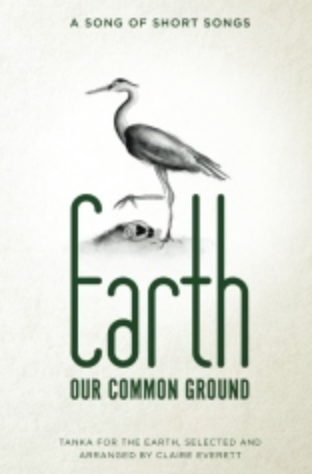

Charles D. Tarlton
Northampton, Massachusetts
The Good Fight: Claire Everett’s Earth, Our Common Ground
Claire Everett, Earth: Our Common Ground: A Song of Short Songs, CreateSpace Creative Platform, Apr 19 2017, Pages: 166, 6" x 9", ISBN/EAN13: 1545214174 / 9781545214176.
Still, there is a difference, and a radical difference, between building a house and writing a poem about building a house — and a poem about having children by marriage is not the same thing as having children by marriage. There are practical acts, and there are symbolic acts....
- Kenneth Burke
We’re not the first humans to burn the forests, dam up the salmon’s river, leach farmland in pursuit of ever-greater crops and profit, despoil virgin forests, pollute rivers and streams, or spill raw crude oil in pristine pastures. An even earlier generation wiped out the buffalo, threatened the extinction of the whale, and watched the topsoil blow away. Wherever humans have built their cities they have overturned the natural way of things, but never before to the degree or at the pace we undermine Nature today. Merely accommodating ourselves to the environmental dangers we face can be daunting, leave aside the question of how things might be righted.
It is a story we are often tempted to portray in simplistic terms (a melodrama or morality play), but today’s problems are not merely moral or aesthetic to be solved by fixing blame or decrying the ugliness. How can we even imagine this many humans living on the Earth without causing considerable damage; add to which the population of the world has risen from one billion in 1850 to seven and a half billion today, and is estimated to grow to eleven plus billion by the end of this century?
So, the tragedy that Claire Everett’s Earth: Our Common Ground addresses, and what makes it such a perfect concern for poetry, is that, despite our efforts and worries, it all still seems so inevitable, so tragic. Like some Sophoclean or Shakespearian plot working its way toward an inexorable end, the problems besetting the Earth can seem equally menacing. Politically and economically, the levers for reversing the waste of the Earth seem firmly in the hands of the spoilers.
Poetry will not save the world, of course, but poetry can illuminate the madness, the betrayal, the imbalance and disharmony, the greed, the destruction of beauty, and the sense of loss that the ruin of the Earth represents. Poetry will not save the earth any more than it could save Greek civilization or put out the fires when London, Chicago, or San Francisco burned. But poetry can examine how we react to it and in so doing, bring us clarity.
Earth, Our Common Ground consists of just fewer than 150 pages of tanka, tanka strings, and tanka prose together with a five-page Foreword by Claire Everett. As you read through the poetry, you can feel the nearly organic way the themes arise, develop, and then fade into others without any formal delineation. The force and beauty of the poems in Earth, Our Common Ground lie in the ways and the degree to which they capture the agonizing tragedy which humans are certainly responsible for and which, at the same time, they seem helpless to head off.
The poems in this volume reflect (albeit often nostalgically) on the beauty of the world in the very act of condemning and lamenting the thoughtless waste and destruction brought on by modern industrial civilization. Not content merely to reflect, however, they also agitate against the latter within an imaginary political arena where the words for placard and marcher go up against the signs of armies, industry, and wealth. The poetry becomes the symbolic antagonist against the images of politics and science, aspiring to seize the moral high ground.
Beauty and Its Enemies
Many of the individual tanka in this collection are, one way or another, observations of some lovely aspect of nature, of life on the earth, a beautiful sunset, a green forest, the gorgeous desolation of desert rocks, a stream, a heron, and Michael McClintock’s red lantana,
...by summer’s end its flowers
have overtaken the yard
There is celebration here, but there is also lamentation, a bemoaning of the thoughtless destruction of beautiful things. There are poems about industrial destruction, about the poisoning of the seas, about global warming, and the threat we represent to the natural order of things:
the world grows strange
when the forest is turned
inside out
a river otter passes me
on the sidewalk
- Kim Goldberg
One of Joy McCall’s several tanka strings registers a deep connection with the world, a passion made all the more intense as it gets visualized through the lens of our short lives. At the end of one long string, past lives, she writes:
all the earth
sings to me
the infinite song
but my song? it is brief
and too soon, it will end
Loss is a central emotion here, the loss of a world that has somehow just slipped away – the stars at night are gone, the topsoil eroded, the oceans rise and threaten to flood, and mercury poisons fish in our diet. We long for what has been lost and at the same time we hold no illusions. As M. Kei puts it here:
I miss
the solitude
of a wintry sea,
just God, work,
and the clatter of oysters
-
Humans live within their own made-up stories, imagining themselves created in God’s image or inhabiting some romanticized realm of history and folklore. Our food, housing, clothing, and our sexuality are transformed in symbols of taste, position, beauty, and romantic love; we think of animals as food, of trees as lumber, fish comes in a can, and our speed and luxury are drawn like veils in front of the desolation of used-up Texas oil fields and the slag heaps of rural Pennsylvania. This ideational distance between Nature and us helps account for much of our myopia; some of these poems seek to tear down such barriers. Here is one by Sandi Pray:
the old oak
this aging hand
skin
touching skin
our sameness
But what chance does a sentiment as delicate as that have against bulldozers and dynamite, or against the immediate promise of jobs and tax revenues? The Dakota Access Pipeline developers assured us only good would result from the scar they meant to lay across North and South Dakota, Iowa, and Illinois. The tragedy becomes a gloomy metaphor in Margaret Chula’s tanka:
Dakota Pipeline
the Standing Rock Sioux tribe
never imagined
black oil coursing underground
like a venomous snake
So, there is the beauty of the Earth and there is its spoliation, and there is the sad realization that we more often than not ignore the destruction, taking it for granted as simply a feature of the system under which we live. It is this realization that hovers about the edges of this book, a profoundly pessimistic mourning that nevertheless strains to see what might be done. Listen to Janet Lynn Davis:
the hope
secreted inside
this sapling—
the fruit it may bear
for my barren world
Symbolic Action
The politics here is a politics of words. That is not to diminish the beliefs or the energy behind this book, but simply to point out a truth about the relation between art and politics. The effronteries and crimes depicted in this book, as well as the uprising against them, is make believe; the battle takes place in an imaginary arena where blows are struck with words and the line between efficacy and fantasy is sometimes blurred. Patricia Prime’s tanka depicts this exchange between the real and the imaginary:
shall I close my eyes
and fall back on the wire fence
guarding the site
like a boxer stunned
and down for the count?
The exhausted or discouraged activist speaking these lines considers deliberately crossing over from the real to the imaginary or poetic (is it a memory of actually demonstrating or a metaphor for a frustrated desire to act?). In the poem’s question we get, in miniature, the larger reality of the relation between poetry and the forces of history. The speaker here wonders whether it might be better to exchange the actual but ineffectual activist role for something that displays defeat more imaginatively, tragically, and sympathetically. Earth, as the book’s title says, Our Common Ground, is not merely the place where we are, or the rationale for what think and feel, it is also a battleground where the demons of modern industry and politics are met by the forces of verse.
And that is the irony. The political force necessary to reverse the undermining of the “Earth” would be something as big, as rich, as ruthless, and as “beneficial” as are the corporations, wealth, government, and worker organizations that steer the direction we are in. In the merely poetic response to the destruction of the Earth’s beauty there is a kind of piety implying that truth or goodness will out. It is a battle of verbal ripostes on this side, as if the tide will turn if only we can get it said right. Autumn Noelle Hall expresses something of the irony I’m talking about. As over against the might of the worldly, what can be done?
does it count
my hiking around
the long way
so as not break
the orb weaver’s web?
Claire Everett works the issue of fracking into an historical lesson, characterizing today’s protestors as the equivalent of mythical warriors of yore. Protestors with symbols in their buttonholes might represent the ancient antagonists of Lancaster and York, but this time “united against a common foe,” ”fighting shoulder to shoulder with the Scots.”
the djembe
and the honks of passing cars
NO MORE FRACKING
sung to the tune
of Bread of Heaven
“We will not countenance defeat,” her brave environmental warrior cries. Earlier in the volume Michele L. Harvey records how politics has failed the Earth and undermined the author’s faith. As smog increases,
my belief
that politicians will do
the right thing, tarnished as well.
Autumn Noelle Hall makes the point that politics lies somewhere beyond the effective reach of mere poetry. After lamenting civilization’s assault of nature, she all but throws up her hands:
I am the Lorax
petitioning congress
handwriting
going the way of the bees
and monarch butterflies
battle fatigue
my iPhone and I
in low power mode
were it only that simple
to flip the planet’s switch
The poet can do little more than name the villains, weep for the destruction of Nature, imagine a better world, exhort the concerned to do something, and chastise the villains, as Neal Whitman names them, those “bandits running roughshod over our common ground.” We are standing “on the brink,” Debbie Strange concludes at the end of her tanka string of too-familiar natural disasters. But, in the end, it is likely to be only frustrating as measured in practical terms. The activist-poet’s fugue is expressed nicely by Julie Bloss Kelsey:
the futility
of trying to help someone
who isn’t ready
extending my finger
for the moth to climb
(Moths are everywhere in steady decline, not counting the many varieties now already extinct).
In the end, it is easy to be pessimistic; mass practical action is a monstrous and difficult undertaking. But (and here is the contradiction at the heart of things) the future is coming regardless, and we can ask ourselves how we would like to be remembered.
places we touch
the footprints we leave
can you hear
our children’s children
whispering on the breeze?
- Michelle Brock
In the face of disaster perhaps we should take away from this book, not a self-righteous sense of being on the side of the angels, but a dedication to more practical political action and a determination to find the instruments and ways to effect change. Otherwise, as Anne Benjamin reminds us, we risk:
in the darkness
across the State
after the storm
energy wasted
in a rain of blame [!]
Editor's Note: Everett's book, Earth: Our Common Ground, is available on Amazon. |